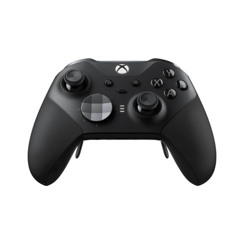

2019 Xbox Elite Series 2 Controller
To date, this controller remains the single most-advanced controller released by Xbox, and still remains one of, if not the best Xbox controllers available. Released in 2019 at a retail price of $250AUD, this unit of a controller is aimed at those who take gaming a bit more seriously.
Interestingly enough, this controller is amongst the cheaper high-end controllers, with controllers coming from a large competitor, Scuf, starting at around £190. ($350AUD) The controller, which costs more to buy than an Xbox One S in 2022, is an amalgamation of high quality materials and features.
Packed to the brim with features, the controller features: easily-interchangeable joystick heads of different heights and textures, a swappable D-Pad, rubberised grips, adjustable trigger stops on the triggers that allows the user to have actuation on a level similar to computer mice, customisable button configurations that can be changed via the click of a button on the controller, adjustable analog stick tension that is changed with a little tool, a USB-C port that allows easy connection to a computer, and 4 detachable paddles on the back of the controller that can be mapped to whatever buttons you want.
All of this is packaged in a much higher-quality controller shell, that still includes all the standard features and buttons of a standard Xbox controller (triggers, shoulder buttons, A, B, X, Y buttons, D-Pad, Analog Sticks). The controller is powered by an internal rechargeable battery (not removeable) that lasts up to 40 hours and is charged via the USB-C port.
As someone who personally owns and actively gives this controller vigorous use, one of the most noticeable differences when you first pick it up is that it quite a bit heavier than a standard Xbox Controller, and feels much sturdier.
It is an absolute dream to use, and if you're more serious about gaming, and can look past the heftier price tag, I would highly recommend you pick this up.
An Elite Series 2 Controller
Image Credit: Microsoft